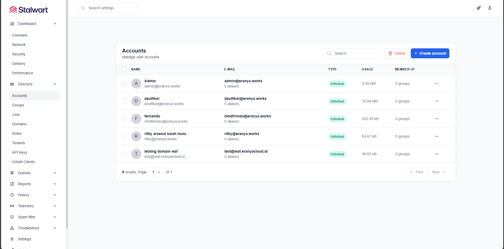

Membangun infrastruktur email berkinerja tinggi, aman, dan dapat diskalakan untuk kebutuhan enterprise.

Membangun server email yang aman dan efisien seringkali menjadi tantangan besar bagi perusahaan. Proyek ini bertujuan untuk mengimplementasikan Stalwart Mail Server, solusi open-source modern yang ditulis dengan Rust, untuk menggantikan infrastruktur email legacy yang lambat dan rentan.
Merancang arsitektur terisolasi menggunakan Docker Compose untuk kemudahan deployment dan maintenance. Konfigurasi keamanan diperketat secara agresif menggunakan DMARC, DKIM, dan SPF untuk memastikan tingkat pengiriman (deliverability) email mencapai standar industri tertinggi.